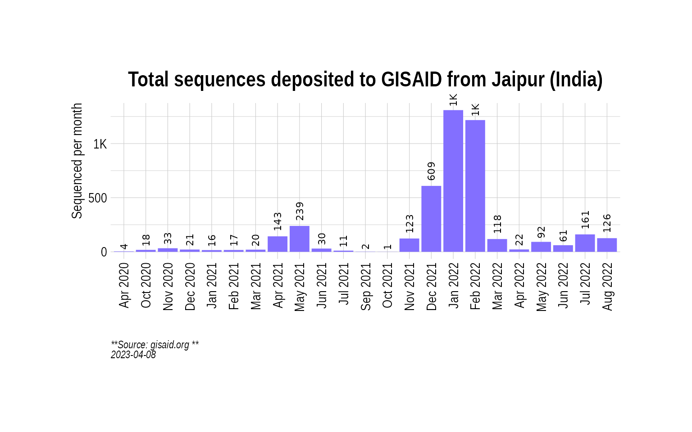
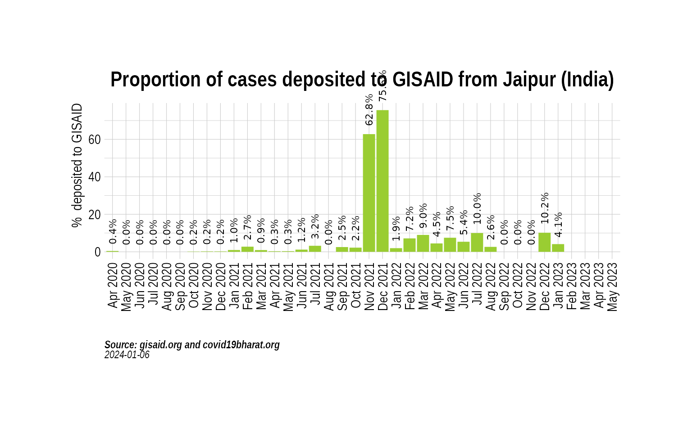
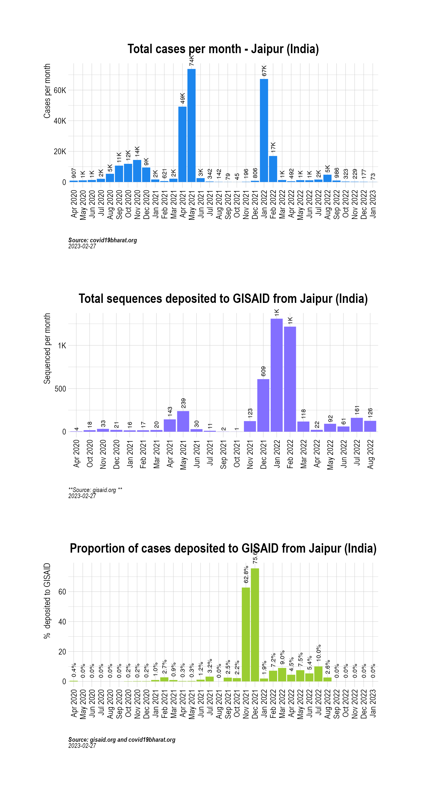
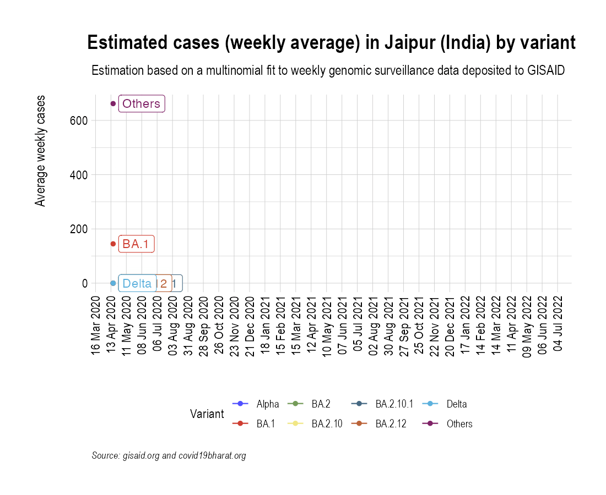
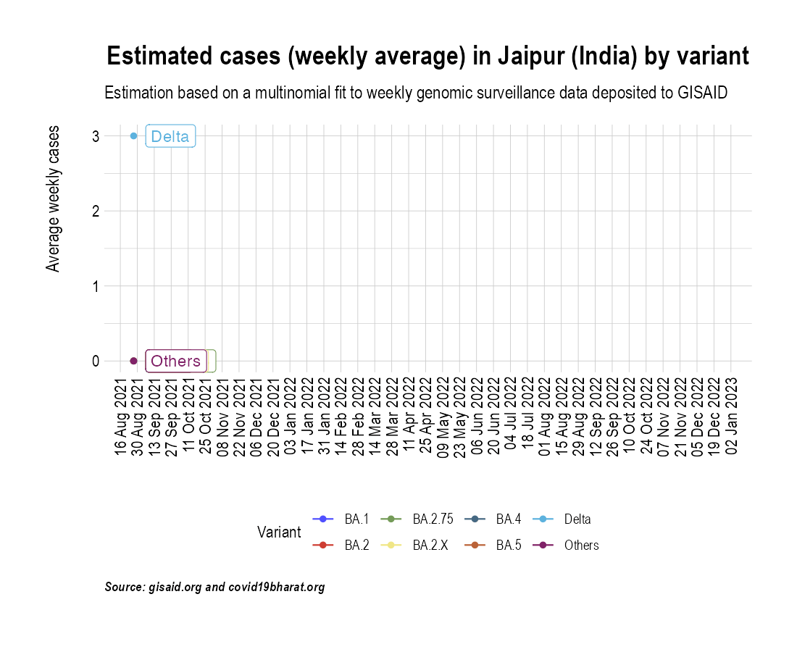
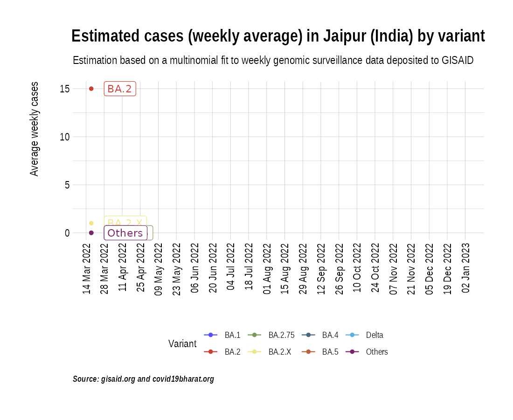

Animation of projected weekly cases - Jaipur (India)
Source:vignettes/VariantAnimation-Jaipur.Rmd
VariantAnimation-Jaipur.Rmd
suppressPackageStartupMessages({
library(covmuller)
library(tidyverse)
})
theme_set(CovmullerTheme())Get variants data for India
gisaid_metadata <- qs::qread("~/data/epicov/metadata_tsv_2024_01_08.qs")
gisaid_india <- FilterGISAIDIndia(gisaid_metadata_all = gisaid_metadata)
vocs <- GetVOCs()
omicron <- vocs[["omicron"]]
vocs[["omicron"]] <- NULL
custom_voc_mapping <- list(
`BA.1` = "BA.1",
`BA.1.*` = "BA.1",
`BA.2` = "BA.2",
`BA.2.*` = "BA.2",
`BA.3` = "BA.3",
`BA.3.*` = "BA.3",
`BA.4` = "BA.4",
`BA.4.*` = "BA.4",
`BA.5` = "BA.5",
`BA.5.*` = "BA.5",
`XBB` = "XBB",
`XBB.1` = "XBB.1+",
`XBB.1.*` = "XBB.1+",
`XBB.1.5` = "XBB.1.5",
`BQ.1` = "BQ.1",
`BQ.1.*` = "BQ.1"
)
gisaid_india <- gisaid_india %>%
filter(pangolin_lineage != "None") %>%
filter(pangolin_lineage != "Unassigned")
gisaid_india$District <- stringr::str_to_title(gisaid_india$District)
gisaid_india$City <- stringr::str_to_title(gisaid_india$City)
gisaid_india$custom_city <- gisaid_india$City
gisaid_india$custom_city[gisaid_india$custom_city == ""] <- gisaid_india$District[gisaid_india$custom_city == ""]
gisaid_india$custom_city <- stringr::str_to_title(gisaid_india$custom_city)
gisaid_india <- CollapseLineageToVOCs(
variant_df = gisaid_india,
vocs = vocs,
custom_voc_mapping = custom_voc_mapping,
summarize = FALSE
)Get monthly cases for Jaipur
chennai_monthly_cases <- GetIndiaConfirmedCasesMonthlyLong(level = "district") %>% filter(District == "Jaipur")## Rows: 661869 Columns: 8
## ── Column specification ────────────────────────────────────────────────────────
## Delimiter: ","
## chr (2): State, District
## dbl (5): Confirmed, Recovered, Deceased, Other, Tested
## date (1): Date
##
## ℹ Use `spec()` to retrieve the full column specification for this data.
## ℹ Specify the column types or set `show_col_types = FALSE` to quiet this message.
head(chennai_monthly_cases)## # A tibble: 6 × 4
## # Groups: MonthYear, State [6]
## MonthYear State District value
## <yearmon> <chr> <chr> <dbl>
## 1 Apr 2020 Rajasthan Jaipur 907
## 2 May 2020 Rajasthan Jaipur 1084
## 3 Jun 2020 Rajasthan Jaipur 1327
## 4 Jul 2020 Rajasthan Jaipur 2100
## 5 Aug 2020 Rajasthan Jaipur 5373
## 6 Sep 2020 Rajasthan Jaipur 10697Get weekly cases for Jaipur
chennai_seq_stats <- TotalSequencesPerMonthCountrywise(gisaid_india %>% filter(custom_city == "Jaipur"), rename_country_as_state = TRUE)
p2 <- BarPlot(chennai_seq_stats, ylabel = "Sequenced per month", color = "slateblue1", label_si = TRUE, title = "Total sequences deposited to GISAID from Jaipur (India)", caption = "**Source: gisaid.org **<br>")
p2
Overall, how much has Jaipur sequenced over months?
While the absolute numbers are informative, a more useful metric is the proportion of cases (cases sequenced over total cases) that are getting sequenced. Here we look at the proportion of cases that have been sequenced in India over the course of the pandemic:
chennai_monthly_cases_tmp <- chennai_monthly_cases %>% select(MonthYear, value)
chennai_monthly_cases_tmp$State <- "India"
chennai_monthly_cases_tmp$type <- "Confirmed"
chennai_monthly_cases_tmp <- chennai_monthly_cases_tmp %>% select(MonthYear, State, value, type)
sequencing_proportion <- CombineSequencedCases(
cases_sequenced = chennai_seq_stats,
confirmed_long = chennai_monthly_cases_tmp
)
p3 <- BarPlot(sequencing_proportion, yaxis = "percent_sequenced_collected", ylabel = "% deposited to GISAID", color = "yellowgreen", title = "Proportion of cases deposited to GISAID from Jaipur (India)", caption = "**Source: gisaid.org and covid19bharat.org**<br>")
p3
p1 / p2 / p3
Project weekly cases to variant prevalence data from GISAID
confirmed_subset_dateweekwise_long <- GetIndiaConfirmedCasesWeeklyLong(level = "district")
gisaid_dist_weekwise <- SummarizeVariantsWeekwise(gisaid_india %>% filter(custom_city == "Jaipur") %>% arrange(WeekYearCollected))
confirmed_subset_dateweekwise_long_dist <- confirmed_subset_dateweekwise_long %>%
filter(District %in% c("Jaipur")) %>%
rename(n = value) %>%
rename(WeekYearCollected = WeekYear) %>%
dplyr::select(-contains("type")) %>%
filter(WeekYearCollected >= min(gisaid_dist_weekwise$WeekYearCollected))
confirmed_subset_dateweekwise_long_dist$State <- NULL
voc_to_keep <- gisaid_dist_weekwise %>%
group_by(lineage_collapsed) %>%
summarise(n_sum = sum(n)) %>%
filter(n_sum > 1) %>%
pull(lineage_collapsed) %>%
unique()
gisaid_dist_weekwise <- gisaid_dist_weekwise %>% filter(lineage_collapsed %in% voc_to_keep)
india_cases_pred_prob_sel_long <- FitMultinomWeekly(gisaid_dist_weekwise, confirmed_subset_dateweekwise_long_dist)## # weights: 32 (21 variable)
## initial value 1617.805519
## iter 10 value 480.680046
## iter 20 value 388.097274
## iter 30 value 380.954800
## iter 40 value 373.712096
## iter 50 value 371.282928
## iter 60 value 370.757331
## iter 70 value 369.415321
## iter 80 value 367.823526
## iter 90 value 367.239289
## iter 100 value 367.069536
## iter 110 value 366.938797
## iter 120 value 366.678526
## iter 130 value 366.519574
## iter 140 value 366.487989
## iter 150 value 366.457991
## iter 160 value 366.396086
## iter 170 value 366.245772
## iter 180 value 366.213012
## iter 190 value 366.172681
## iter 200 value 366.158749
## iter 210 value 366.100283
## iter 220 value 366.049895
## iter 230 value 366.039758
## iter 240 value 365.985949
## iter 250 value 365.957557
## iter 260 value 365.899334
## iter 270 value 365.879119
## iter 280 value 365.843718
## iter 290 value 365.828751
## iter 300 value 365.793715
## final value 365.792832
## converged
the_anim <- PlotVariantPrevalenceAnimated(india_cases_pred_prob_sel_long, title = "Estimated cases (weekly average) in Jaipur (India) by variant", caption = "**Source: gisaid.org and covid19bharat.org**", date_breaks = "28 days")
gganimate::anim_save(filename = here::here("docs/articles/Jaipur_animated.gif"), animation = the_anim)
Look at cases after January, 2022 only:
confirmed_subset_dateweekwise_long <- GetIndiaConfirmedCasesWeeklyLong(level = "district")## Rows: 661869 Columns: 8
## ── Column specification ────────────────────────────────────────────────────────
## Delimiter: ","
## chr (2): State, District
## dbl (5): Confirmed, Recovered, Deceased, Other, Tested
## date (1): Date
##
## ℹ Use `spec()` to retrieve the full column specification for this data.
## ℹ Specify the column types or set `show_col_types = FALSE` to quiet this message.
confirmed_subset_dateweekwise_long <- confirmed_subset_dateweekwise_long %>%
filter(WeekYear >= tsibble::yearweek("2021 W35")) %>%
filter(District %in% c("Jaipur")) %>%
group_by(WeekYear) %>%
summarise(n = sum(value)) %>%
arrange(WeekYear) %>%
rename(WeekYearCollected = WeekYear)
gisaid_dist <- gisaid_india %>%
filter(MonthYearCollected > "Dec 2021") %>%
filter(custom_city == "Jaipur") %>%
arrange(WeekYearCollected)
gisaid_weekwise <- SummarizeVariantsWeekwise(gisaid_dist)
voc_to_keep <- gisaid_weekwise %>%
group_by(lineage_collapsed) %>%
summarise(n_sum = sum(n)) %>%
filter(n_sum > 1) %>%
pull(lineage_collapsed) %>%
unique()
gisaid_weekwise <- gisaid_weekwise %>% filter(lineage_collapsed %in% voc_to_keep)
cases_pred_prob_sel_long <- FitMultinomWeekly(gisaid_weekwise, confirmed_subset_dateweekwise_long)## # weights: 24 (15 variable)
## initial value 1290.066818
## iter 10 value 362.768644
## iter 20 value 344.153636
## iter 30 value 343.014915
## iter 40 value 342.825706
## iter 50 value 342.152276
## iter 60 value 340.584532
## iter 70 value 339.719525
## iter 80 value 339.377251
## iter 90 value 339.301194
## iter 100 value 339.269558
## iter 110 value 339.250575
## iter 120 value 339.186443
## iter 130 value 339.162322
## iter 140 value 339.131915
## iter 150 value 339.123937
## iter 160 value 339.109363
## iter 170 value 339.106562
## iter 180 value 339.101308
## iter 190 value 339.094793
## iter 200 value 339.092416
## iter 210 value 339.089950
## iter 220 value 339.088825
## iter 230 value 339.088030
## iter 240 value 339.086764
## iter 250 value 339.084645
## iter 260 value 339.083477
## iter 270 value 339.082670
## iter 280 value 339.081755
## iter 290 value 339.081098
## iter 300 value 339.080655
## iter 310 value 339.080352
## iter 320 value 339.080143
## iter 330 value 339.079784
## iter 340 value 339.079333
## final value 339.078769
## converged
the_anim <- PlotVariantPrevalenceAnimated(cases_pred_prob_sel_long, title = "Estimated cases (weekly average) in Jaipur (India) by variant", caption = "**Source: gisaid.org and covid19bharat.org**<br>")## `geom_line()`: Each group consists of only one observation.
## ℹ Do you need to adjust the group aesthetic?
## `geom_line()`: Each group consists of only one observation.
## ℹ Do you need to adjust the group aesthetic?
gganimate::anim_save(filename = here::here("docs/articles/Jaipur_animated_2021.gif"), animation = the_anim)
Look at cases in the last few weeks:
confirmed_subset_dateweekwise_long <- GetIndiaConfirmedCasesWeeklyLong(level = "district")## Rows: 661869 Columns: 8
## ── Column specification ────────────────────────────────────────────────────────
## Delimiter: ","
## chr (2): State, District
## dbl (5): Confirmed, Recovered, Deceased, Other, Tested
## date (1): Date
##
## ℹ Use `spec()` to retrieve the full column specification for this data.
## ℹ Specify the column types or set `show_col_types = FALSE` to quiet this message.
confirmed_subset_dateweekwise_long <- confirmed_subset_dateweekwise_long %>%
filter(WeekYear >= tsibble::yearweek("2022 W12")) %>%
filter(District %in% c("Jaipur")) %>%
group_by(WeekYear) %>%
summarise(n = sum(value)) %>%
arrange(WeekYear) %>%
rename(WeekYearCollected = WeekYear)
gisaid_dist <- gisaid_india %>%
filter(MonthYearCollected > "Dec 2021") %>%
filter(custom_city == "Jaipur") %>%
arrange(WeekYearCollected)
gisaid_weekwise <- SummarizeVariantsWeekwise(gisaid_dist)
voc_to_keep <- gisaid_weekwise %>%
group_by(lineage_collapsed) %>%
summarise(n_sum = sum(n)) %>%
filter(n_sum > 1) %>%
pull(lineage_collapsed) %>%
unique()
gisaid_weekwise <- gisaid_weekwise %>% filter(lineage_collapsed %in% voc_to_keep)
cases_pred_prob_sel_long <- FitMultinomWeekly(gisaid_weekwise, confirmed_subset_dateweekwise_long)## # weights: 24 (15 variable)
## initial value 1290.066818
## iter 10 value 362.768644
## iter 20 value 344.153636
## iter 30 value 343.014915
## iter 40 value 342.825706
## iter 50 value 342.152276
## iter 60 value 340.584532
## iter 70 value 339.719525
## iter 80 value 339.377251
## iter 90 value 339.301194
## iter 100 value 339.269558
## iter 110 value 339.250575
## iter 120 value 339.186443
## iter 130 value 339.162322
## iter 140 value 339.131915
## iter 150 value 339.123937
## iter 160 value 339.109363
## iter 170 value 339.106562
## iter 180 value 339.101308
## iter 190 value 339.094793
## iter 200 value 339.092416
## iter 210 value 339.089950
## iter 220 value 339.088825
## iter 230 value 339.088030
## iter 240 value 339.086764
## iter 250 value 339.084645
## iter 260 value 339.083477
## iter 270 value 339.082670
## iter 280 value 339.081755
## iter 290 value 339.081098
## iter 300 value 339.080655
## iter 310 value 339.080352
## iter 320 value 339.080143
## iter 330 value 339.079784
## iter 340 value 339.079333
## final value 339.078769
## converged
the_anim <- PlotVariantPrevalenceAnimated(cases_pred_prob_sel_long, title = "Estimated cases (weekly average) in Jaipur (India) by variant", caption = "**Source: gisaid.org and covid19bharat.org**<br>")## `geom_line()`: Each group consists of only one observation.
## ℹ Do you need to adjust the group aesthetic?
## `geom_line()`: Each group consists of only one observation.
## ℹ Do you need to adjust the group aesthetic?
gganimate::anim_save(filename = here::here("docs/articles/Jaipur_animated_2022.gif"), animation = the_anim)